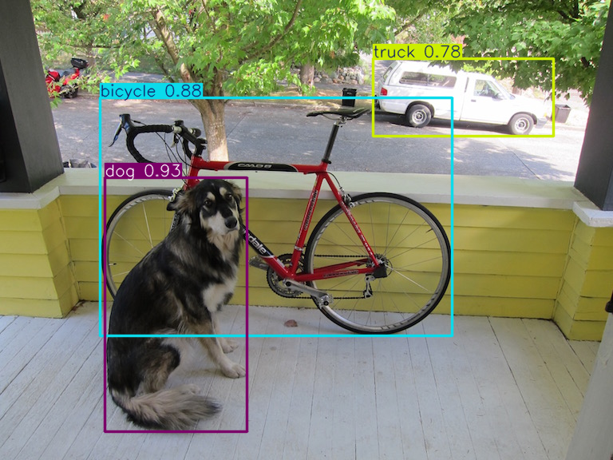
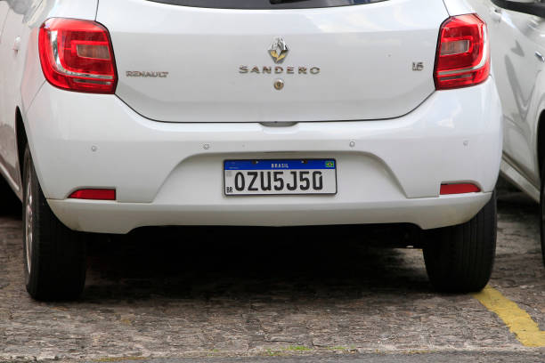
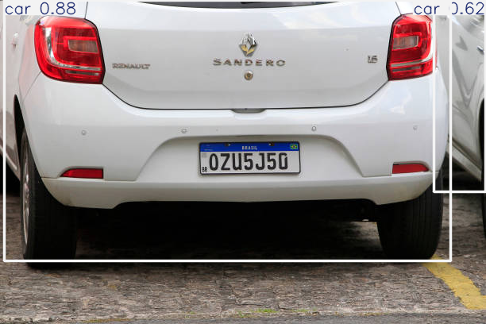
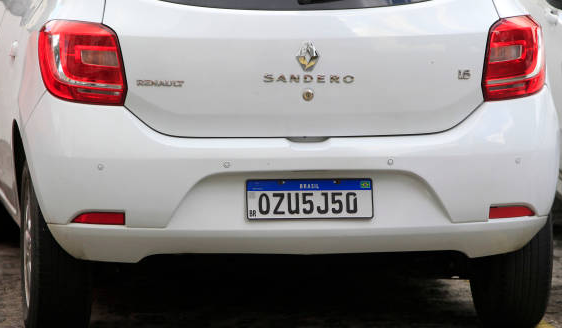
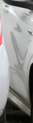

Visão Computacional,
YOLOv8, OCR & IA Responsável
Detecção de Objetos (YOLOv8), Leitura de Placas Veiculares (EasyOCR), Emoções Faciais (DeepFace), Ética e Atividade 03 da Trilha Skills Boost
Como as Máquinas Enxergam?
Visão Computacional
De matrizes tridimensionais de pixels (RGB/BGR) à localização espacial em tempo real.
As 3 Tarefas da Visão Computacional
Responde apenas: "O quê?"
Tensor 3D (Altura × Largura × 3 Canais)
Ex: Teachable Machine
"Contém Carro (95%)"Responde: "O quê?" e "Onde?"
Varredura em passagem única
You Only Look Once
[x1, y1, x2, y2] + ConfiançaIdentidade e Microexpressões
Localiza o rosto
Olhos, boca, sobrancelhas
Emoção, Idade, Biometria
Ultralytics (YOLOv8)
Motor de rede neural convolucional treinado no dataset COCO (80 objetos do cotidiano: pessoa=0, bicicleta=1, carro=2, moto=3, ônibus=5, caminhão=7).
OpenCV (cv2)
Manipula imagens como matrizes NumPy, desenha retângulos (cv2.rectangle), recorta Regiões de Interesse (ROI) e converte cores (BGR $\to$ RGB).
EasyOCR & DeepFace
Redes neurais especializadas para transformar pixels de placas em texto digital (OCR) e classificar expressões emocionais humanas.
Detecção e Contagem de
Objetos com YOLOv8
Localizando múltiplos objetos em uma única passagem e extraindo relatórios estruturados.
Lab 4.1: Passos 1 a 5 — Detecção Visual com YOLOv8

Análise da Saída Visual: Em apenas 491ms, o YOLOv8 traçou 3 Bounding Boxes simultâneas: dog (0.93), bicycle (0.88) e truck (0.78) ao fundo!
Lab 4.1: Passo 6 — Extração de Dados e Contagem Automática
Uma aplicação industrial não precisa apenas da imagem desenhada; precisamos extrair os objetos de resultados[0].boxes para gerar métricas e alertas:
Desafio de Fixação no Colab:
1. Troque 'yolov8s.pt' por 'yolov8n.pt' (Nano) ou 'yolov8x.pt' (Extra Large).
2. Reduza MINIMA_CONFIANCA = 0.10: veja como a IA detecta até a moto escondida atrás da árvore à esquerda!
Monitoramento Inteligente:
Leitura de Placas (ALPR)
Combinando YOLOv8 (Detecção de Veículos) + OpenCV (Recorte ROI) + EasyOCR (Leitura Alfanumérica).
Lab 4.2: A Esteira de Processamento (Pipeline ALPR)
Controle de Acesso / Pedágio
yolov8s.pt)Detecta Veículo [2,3,5,7]
Metade inferior (
55% à base)Lê caracteres Mercosul
Desenha tag na imagem
| ID | Classe (COCO) | Aplicação |
|---|---|---|
| 2 | car | Carros de passeio |
| 3 | motorcycle | Motos e ciclomotores |
| 5 | bus | Ônibus e vans escolares |
| 7 | truck | Caminhões de carga e guinchos |
Por que recortar o veículo antes do OCR?
Se passarmos a foto inteira de uma avenida para o EasyOCR, ele tentará ler placas de lojas, faixas e outdoors (ruído). Ao isolar a Bounding Box veicular (ROI — Region of Interest), aumentamos drasticamente a velocidade e a acurácia!
Lab 4.2: Passo 2 — Upload e Detecção Veicular com YOLOv8


Análise da Cena: O YOLOv8 identificou com precisão 2 veículos (2 cars) na cena: o Renault Sandero central (car 0.88) e a lateral do carro branco à direita (car 0.62). Com as coordenadas de cada caixa, podemos extrair a ROI da placa no passo seguinte!
Lab 4.2: Passo 3 — Recorte ROI, Leitura OCR e Anotação Visual


Engenharia da Solução ALPR:
• Corte da Metade Inferior (0.55): Evita capturar o emblema cromado "SANDERO" e o vidro, focando exclusivamente na placa.
• Filtro Mercosul (len >= 6): Elimina falsos positivos da lateral e ruídos de asfalto, garantindo confiabilidade industrial!
Reconhecimento Facial e
Emoções com DeepFace
Extraindo microexpressões faciais, idade estimada e emoção dominante com redes neurais profundas.
Lab 4.3: Analisando Emoções na Foto com DeepFace
4 Exercícios Práticos no Colab
- 1. Cor RGB: Mude
(0, 255, 0)(Verde) para Vermelho(255, 0, 0). - 2. Demografia: Altere para
actions=['emotion', 'age', 'gender']e imprimaface['age']. - 3. Teste de Limite: Envie a foto de uma estátua ou anime!
- 4. Segunda Emoção: Inspecione
face['emotion']no console.
IA Responsável &
Atividade 03 da Trilha
Viés algorítmico em Visão Computacional, LGPD e os 7 Princípios de IA do Google Cloud.
Ética na Prática: Desafios da Visão Computacional
Riscos Críticos em Sistemas Visuais
- Viés Algorítmico (Bias): Se um modelo facial for treinado majoritariamente com um único grupo demográfico, terá taxas de erro muito maiores em outras etnias, idades ou iluminação.
- Falsos Positivos em Segurança: Confundir uma placa (`0ZU5550` vs `OZU5J50`) ou um rosto em uma lista de procurados exige revisão humana obrigatória (Human-in-the-Loop).
- Privacidade e LGPD: Biometria facial é dado pessoal sensível; exige consentimento e proteção criptográfica.
Os 7 Princípios de IA do Google
- 1. Ser socialmente benéfica e resolver problemas reais.
- 2. Evitar criar ou reforçar vieses injustos nos datasets.
- 3. Ser construída e testada para segurança rigorosa.
- 4. Ser responsável perante as pessoas (auditável).
- 5. Incorporar princípios de design de privacidade.
- 6. Manter altos padrões de excelência científica.
- 7. Estar disponível para usos alinhados a esses princípios.
Hora da Trilha! Atividade 03 no Google Cloud Skills Boost
Curso 3: Introduction to Responsible AI
Acesse o Google Cloud Skills Boost e inicie a 3ª atividade da trilha:
- O que você verá no vídeo: Por que o Google estabeleceu os 7 Princípios de IA Responsável, o que a IA do Google não desenvolve (ex: vigilância em violação a direitos humanos) e governança técnica.
- Conexão com nossos Labs: Relacione o vídeo diretamente aos desafios de viés e falsos positivos que observamos no OCR e no DeepFace!
- Avaliação: Questionário oficial (Quiz) ao final da atividade.
LEMBRETE OBRIGATÓRIO DE VÍDEO
Assista ao vídeo da Atividade 03 até o último segundo!
Não pule para o Quiz antes do vídeo concluir para garantir os 100% de progresso e o desbloqueio do seu 3º Badge oficial.
Meta de Hoje: 75% da Trilha Concluída
3 de 4 cursos concluídos! Amanhã faremos a grande integração final na nuvem.
Rumo ao Grande Final!
Salvem seus 3 notebooks de Visão Computacional no Google Drive (Ctrl+S) — eles compõem a Etapa 1 do Projeto Final SIMI! Na Aula 05 (Última Aula), criaremos nosso Chatbot no Google Dialogflow ES integrado ao servidor Flask no PythonAnywhere + Conclusão 100% da Trilha Skills Boost!